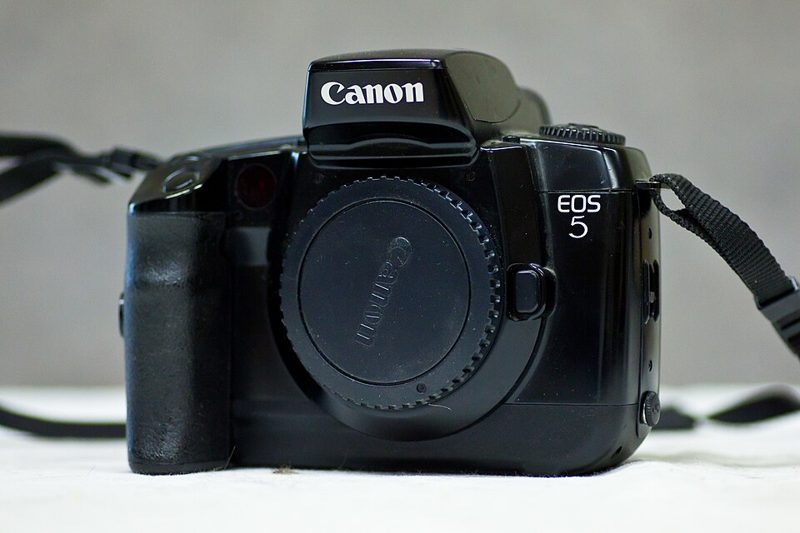
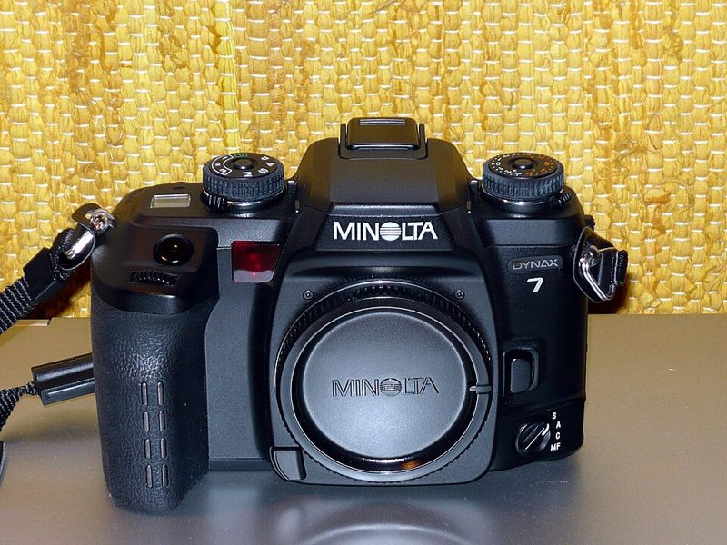

자동초점 SLR AF SLR · 135
90~2000년대 자동초점 필름 SLR. 조작이 요즘 디지털 카메라와 비슷합니다.



어떻게 찍히나요
셔터를 반쯤 누르면 모터가 렌즈를 움직여 초점을 맞춥니다. 프로그램(P)·조리개 우선(A)·셔터 우선(S)·수동(M) 모드를 모두 지원해, 처음엔 자동으로 찍다가 익숙해지면 수동으로 넘어갈 수 있습니다.
이런 분께 추천
- 디지털 카메라를 써 본 분
- 움직이는 대상(아이, 반려동물, 스포츠)을 찍는 분
- 적은 예산으로 성능 좋은 바디를 원하는 분
좋은 점과 아쉬운 점
- 좋은 점
- 중고가가 비교적 저렴, 빠른 AF
- 아쉬운 점
- 플라스틱 바디, 전자 고장
대표 기종
Nikon F100 · Canon EOS 5 · Minolta α-7
대략적인 가격
5만 ~ 35만 원
어울리는 필름
중고로 살 때 확인할 것
- 액정 표시가 흐리거나 깨지지 않았는지
- 고무 그립·뒷판이 끈적이지 않는지
- AF 모터 소리가 고르게 나는지
- 배터리 규격(CR2·AA 등)을 미리 확인